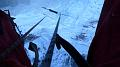

| Deepest Blue/Blaubart WI5+ 150m Erlaufboden (Hintere Tormäuer) 2009. január 24. |
 |
Az Annaberg környéki völgykatlan a (Budapestről) leggyorsabban elérhető jégmászóhelyek közé tartozik — legalábbis tartósan hideg teleken, ugyanis tengerszint feletti magassága csak 650m. Az odavezető patakmenti ösvényről több egyhosszas kettes-hármas jeget is látunk, végül jobbra letérve a fák mögött megpillantjuk az "igaziakat", a katlan ötös-hatos útjait.
Választott utunk, a Deep Blue az első nittelt standig 35 méteren hármas, majd 25 méteren négyes. A következő hossz első 25 métere ismét csak kettes-hármas, majd jobbra ágazik 4+-ért, újabb 25 méteren. Érdekesebb azonban direkt változata, ugyanis egyenesen is tovább lehet mászni egy jégcsapig, majd azon tovább. Kalauzunk (lásd www.bergsteigen.at/de/touren.aspx?ID=974) szerint ennek a változatnak Deepest Blue a neve és 6- a nehézsége; de mint később megtudjuk, ugyanezt az utat az Eisklettern Österreich Ost c. kalauz Blaubart néven említi, 5+ nehézséggel.
A jégcsap idén egybefüggő, így esélyesnek tűnt — persze csak a 4+-os kerülő kimászása után terveztük. Az útba azonban nem mi szálltunk be először. A szlovákok első két hosszát Bálint egyből oldotta meg, így hamar megelőztük őket, hátulmászójuk pedig azt is türelmesen megvárta, hogy Dinának és Jankának berakjunk oroszba egy kötelet. A következő hosszban már nem akadályoztuk volna egymást, a szlovák elölmászó mégis hangot adott reményének, hogy mi a direktet másszuk. Eredetileg könnyebb úton akartam volna tesztelni, hogy egyáltalán milyen is az (elöl) egyfogú hágóvas — korábban ugyanis csak kétfogúakkal másztam —, de másfél óra alvás és négy óra vezetés kissé tompává tett, az elágazásnál pedig egyértelmű volt, hogy melyik a gradiensirány. Csak akkor ébredtek kételyeim, amikor közelebb értem — mi van, ha mégsem elég a 60m? Standoljak? A jégcsap egy áthajlásban lóg le és a bal oldalán van a nittelt stand, továbbmászáshoz teljesen rossz helyen. Különben sem ízlett a gondolat, hogy csak egy hármast másszak és a nehézség megint Bálintra jusson. Az a szempont pedig csak halványan merült fel, hogy a jelenlegi, fél kötélhosszal lejjebb levő standról biztosítani se lehet jól, esés esetén túl sokat nyúlna a kötél. (Úgysem esek!) Visszatraverzáltam az egybefüggő részhez és elindultam felfelé.
Nem is lenne nehéz, ha nem kéne csavarni... Már a harmadiknál tartok,
ezzel különösen sokat kell küzdeni. Sajnos nem az én jól bevált lézer
szonikom, hanem Bálint kedvencei közül való — csak sokadik próbálkozásra
harap a jégbe és ezt is csak egy bemélyedésben tudom elérni, ahol viszont a
bazinagy kurblija akad el. Nem is csavarom be teljesen, csak hogy
biztonságosan belepihenhessek. A függőleges szakasz vége közelinek tűnik, innen
úgyis egyben kinyomom. Nekiindulok. Minden ütéssel fogy az erőm, de elérem a
függőleges tetejét, ahol egy kevésbé meredek jégtáblát találok. Kezdenék
fellélegezni, de még korai. A jobb csákánnyal már inkább kapirgálok, mint
ütök, a kezem kezd lecsúszni a markolatról. A lépés se túl jó, szokatlan még
az egyfogú. Talán a bal kezemben még bízhatok, de a csákányt feljebb kéne
beütni.
A jobb kezemből minden erő elszáll...
De nem hagy el, együtt szárnyalunk, g-vel gyorsulva fejjel lefelé.
Ütődés a bal könyökömön, meg egy erő, ami visszahúz és megállít.
A kötélen lógok, az ég újra felül.
A jobb kezem üres, a balban egy csákány, meg a fájdalom a könyökömben.
Amint magamhoz térek, első reakcióként lekiabálok Bálintnak, hogy eresszen le.
A takarásból persze nem hallja és rögtön rá is jövök, hogy nem elég hosszú a
kötél. Átveszem jobb kezembe a csákányt, eltámolyognék balra; egy szintben
vagyok a kihagyott standponttal, de ráébredek, hogy az még mindig nincs jó
helyen. Eltraverzálok a jobb szélre, ott standolok két megmaradt csavarommal.
Közben alul megjelenik a szlovák srác, ő látja a másik csákányomat, a
jégben maradt 10-12 méterrel feljebb. Jó, akkor (szinte) minden rendben! Fél
kézzel felbiztosítom Bálintot. Nem érzem, hogy mikor feszül a kötel, hiszen
felettem még három köztesen megy át és csak onnan le. Egy kis
szerencsétlenkedés után rájövök, hogyan tudom fél kezemmel hatékonyabban
ráncigálni. Bálint felér hozzám, megegyezünk abban, hogy innen már
csak biztosítani fogom, követni nem. A nehezén gyorsan túljut — a
harmadik csavaromig oroszban, fölé pedig még berak egy sajátot. Eléri a
csákányomat, de még ezután is meglepően sok van hátra — úgy tűnik, hogy
ha túljutottam volna a függőlegesen, akkor is szükség lett volna egy közbülső
standra. Ráadásul még feljebb is van függőleges szakasz, bár rövidebb. Bálint
végül feljut — sikerült!
Az ereszkedéstől előre félek, bal kezemmel ugyanis minimális erőt tudok csak kifejteni, még a csomózás és bogozás is fájdalmas. A jégcsap alatti ereszkedőstandban elér minket a szlovák srác. Megemlíti, hogy milyen jó találmány a mellbekötő, mert megakadályozta volna, hogy átforduljak a levegőben. Eddig igaz is, de kétes, hogy hágóvassal lefele jobban jártam volna-e. Ha két közelmúltbeli balesetre és elszenvedőik mankóira gondolok, meg arra, hogy én most tízszer annyit estem, mint ők, akkor örülök, hogy nekem "csak" a könyököm és nem a hágóvasam akadt a jégfalba.
Bal karomban merevednek az izmok, de a pruszikot még tudom tartani, így az ereszkedés lényegi része alig lassul, a kötelekkel való vacakolás meg elsősorban Bálintra marad. Bénázásaim ellenére hamarabb leérünk a földig, mint a szlovákok az utolsó ereszkedőpontba. A következő nehézség a jeges ösvény, amin sikerül anélkül eljutnom a parkolóig, hogy elcsúsznék és merev karomra esnék. Az operációra három nappal később kerül sor, a singcsontom letört végét rögzítik egy lemezzel és hét csavarral. A vas egy évig marad a karomban.
Csizmadia Péter
2009.01.31.